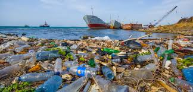
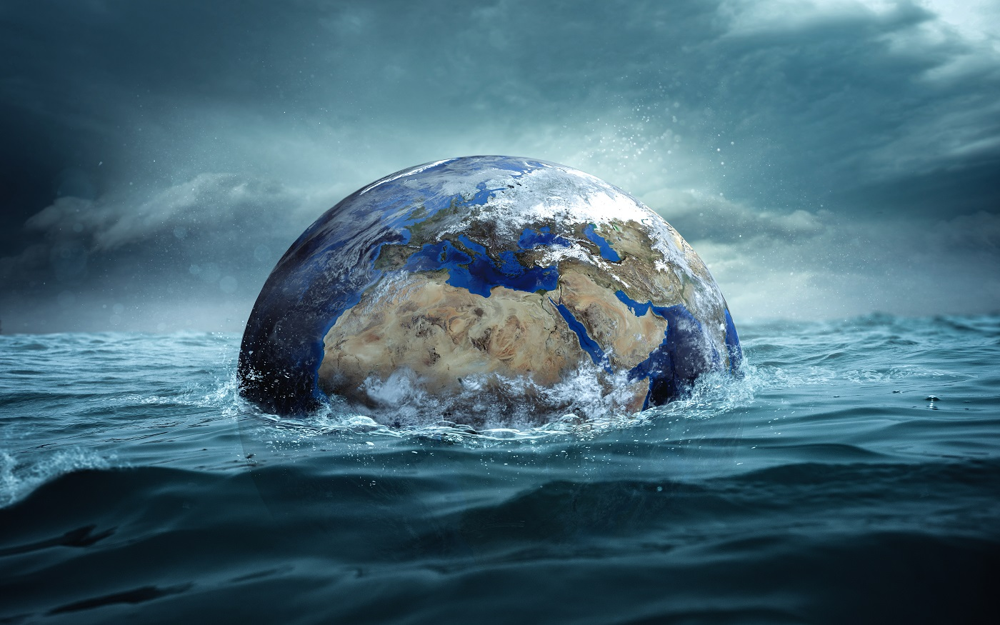
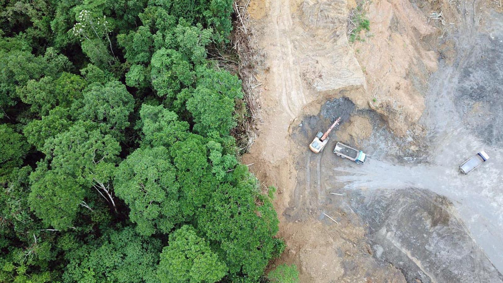
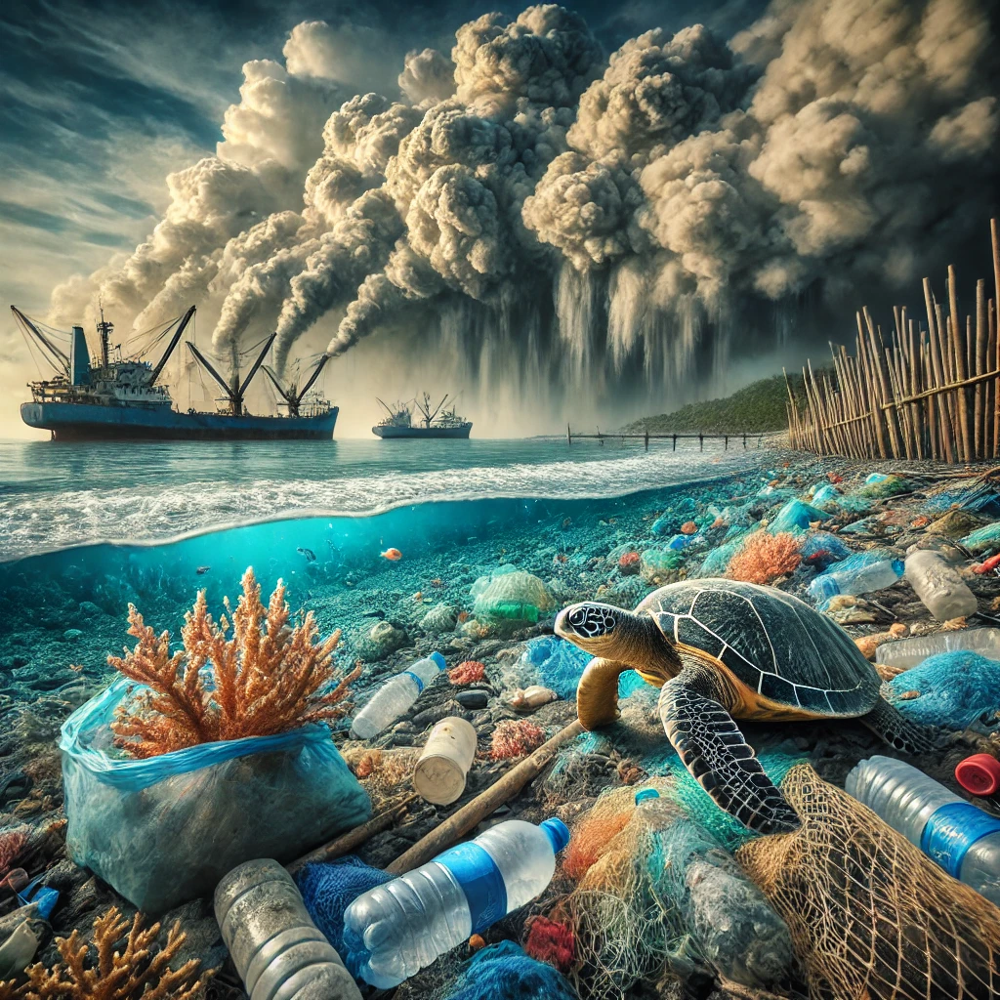

Protéger la vie aquatique pour un avenir durable
Découvrez les enjeux de l'ODD 14 et comment vous pouver contribuer
Un texte d'introduction pour captiver les visiteurs.
Qu’est-ce que l’ODD 14 ?
L’ODD 14 vise à conserver et utiliser durablement les océans, les mers et les ressources marines.
Cibles clés
- Réduire la pollution marine.
- Protéger les écosystèmes marins.
- Encourager la pêche durable.
Les défis de nos océans
Pollution Plastique :
La pollution plastique est l'un des défis environnementaux majeurs de notre époque. Chaque année, des millions de tonnes de plastique sont produites, et une grande partie finit dans les océans, les rivières et les sols, causant des dommages irréparables à la faune et aux écosystèmes. Ce matériau, bien que pratique et durable, met des centaines d'années à se décomposer, libérant des microplastiques qui contaminent les chaînes alimentaires et affectent également la santé humaine. Face à cette crise, il est essentiel de réduire notre consommation de plastique, d'encourager le recyclage et de développer des alternatives écologiques pour préserver notre planète pour les générations futures.
Changement Climatique
Le changement climatique est un défi mondial causé par l'augmentation des émissions de gaz à effet de serre, principalement dues aux activités humaines. Il entraîne une hausse des températures, la fonte des glaces, des phénomènes météorologiques extrêmes et la montée des océans, menaçant les écosystèmes et les populations. Agir vite pour réduire ces émissions et adopter des pratiques durables est essentiel pour limiter ses impacts.
Perte de Biodiversité
La perte de biodiversité résulte de la destruction des habitats, du changement climatique, de la pollution et de la surexploitation des ressources. Elle fragilise les écosystèmes, réduit les services essentiels qu’ils fournissent, comme l'air pur et la pollinisation, et menace l'équilibre de la vie sur Terre. Préserver la biodiversité est crucial pour l’avenir de notre planète.
Statistiques
1 million: Nombre d’oiseaux marins qui meurent chaque année à cause des déchets plastiques.
100 000: Mammifères marins (dauphins, phoques, etc.) tués chaque année par ingestion ou enchevêtrement dans des filets.
2050: Date estimée à laquelle il pourrait y avoir plus de plastique que de poissons dans l’océan si rien n’est fait.
90%: De la chaleur excédentaire générée par le changement climatique est absorbée par les océans, entraînant une augmentation de leur température.
40%: Des récifs coralliens mondiaux ont déjà disparu à cause du réchauffement climatique et de l’acidification des océans.
33%: Des stocks de poissons mondiaux sont surexploités
90%: Des grands poissons prédateurs (thons, espadons, requins) ont disparu des océans en raison de la surpêche.
3 milliards: Nombre de personnes dépendant directement des océans pour leur subsistance (nourriture, emploi).
260 milliards $: Perte annuelle potentielle pour l’économie mondiale en raison de la dégradation des écosystèmes marins.
Comment agir pour protéger les océans ?
Chacun peut contribuer à la préservation des océans en adoptant des gestes simples au quotidien. Réduire sa consommation de plastique, privilégier les produits durables et recycler permettent de limiter la pollution marine. Choisir des fruits de mer issus de la pêche durable protège les écosystèmes aquatiques. Sensibiliser son entourage à l'importance des océans et soutenir des initiatives de nettoyage ou des organisations de conservation sont également des actions concrètes. Ensemble, nos petits efforts peuvent avoir un grand impact pour protéger ces précieux écosystèmes, essentiels à la vie sur Terre.
- Pour les gouvernements
- Pour les entreprises
- Pour les citoyens
Mise en place des lois
Réduction des déchets
Limiter l'usage de plastiques, nettoyer les plages
Rejoignez le Mouvement
Chaque petit geste compte. Ensemble, faisons la différence